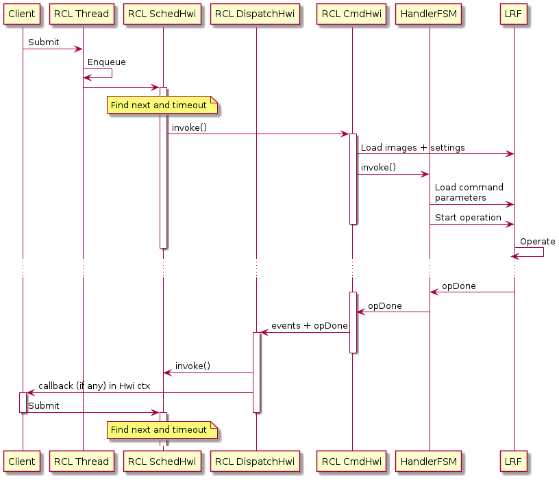

In order to ensure that critical sections are reduced and timing constraints are met, three different priority interrupts are used for different types of operations.
From lowest to highest priority:
- Scheduling Hwi: This is the lowest priority interrupt. When the client submits a command, the command is enqueued in whatever context the client has called it, and the scheduling Hwi is invoked. If the command is an immediate schedule command, then the command Hwi is invoked.
- Dispatch Hwi: This Hwi checks if the command has completed and takes it out of circulation for possible reuse, it notifies the owner about the RCL and LRF events associated with the radio operation, and executes the callback (if there is one).
- Command Hwi: This is the highest priority interrupt. It is in charge of bringing the radio into the desired state and invoking the handler state machine which loads the specific commands and parameters, and then starts the operation.
Once the operation is done, the handler informs the command Hwi and the dispatch Hwi, and the dispatch Hwi invokes the scheduling Hwi again to proceed with the "next" command (if any is scheduled).

 1.8.12
1.8.12